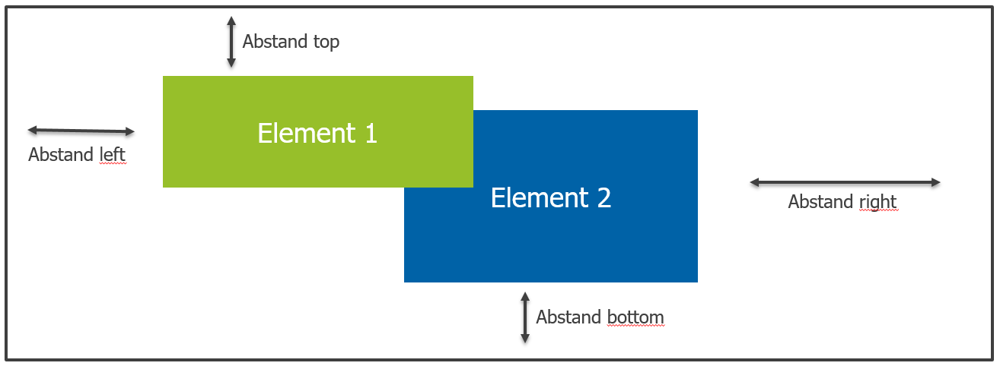
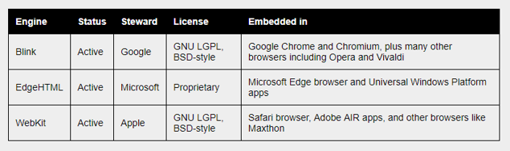
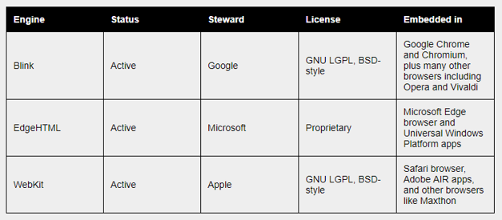

Layouts und Positionierung
Das Default-Layout in HTML ist das sog. "Flow-Layout". Dabei werden HTML-Elemente anhand ihrer display-Eigenschaft als block oder inline ausgerichtet. Moderne Webseiten haben komplexe Layouts, welche über das Flow Layout alleine nicht realisierbar wären. Eine Option die CSS bereitstellt ist die Positionierung von HTML-Elementen. Weitere Optionen sind die Layout-Systeme flexbox und grid.
Positionierung
Mit den CSS-Eigenschaften left, top, right und bottom können HTML-Elemente individuell positioniert werden. Zur Festlegung des Koordinaten-Ursprungs (0,0) können verschieden Angaben zur CSS-Eigenschaft position getätigt werden.

Die folgenden Positionsangaben sind definiert:
static: Dies ist default und positioniert das HTML-Element entlag des normalen Flusses (Flow-Layout). Die CSS-Eigenschaftenleft,top,right,bottomundz-indexhaben keine Auswirkung.relative: Das HTML-Element wird aus dem normalen Fluss entfernt und kann einen relativen Abstand zur eigentlichen (durch das Flow-Layout festgeleten) Position festlegen. Die Position kann dabei über die CSS-Eigenschaftenleft,top, etc festgelegt werden. Die eigentliche Position des HTML-Elements bleibt dabei leer. Die relative Positionierung hat keinen Einfluss auf andere HTML-Elemente.absolute: Das HTML-Element wird aus dem normalen Fluss entfert und kann einen absoluten Abstand zum Ursprung festlegen. Der Ursprung wird dabei durch die linke obere Ecke des Elternelements in der Hierarchie nach oben festgelegt, dass keinestaticPositionierung hat. Als letzte Instanz würde der Wurzelknotenhtmlfungieren.fixed: Ähnlich zurabsolute-Positionierungjedoch bleibt das HTML-Element auch bei Scrolling an der festgelegten Position stehen.
Beispiel zur relativen Positionierung
Durch die relative Positionierung wird die festgelegte Position durch das Flow-Layout als Koordinaten-Ursprung festgelegt. Die Positionsangaben left, right, top und bottom bezeihen sich dabei relativ zu Koordinaten-Ursprung.
Der Ausgangspunkt für das Beispiel sind 4 quadratische HTML-Elemente, welche im normalen Fluss positioniert sind:
Im Beispiel wird das zugehörige HTML gezeigt:
<section> <div class="element"></div> <div class="element position-element"></div> <div class="element"></div> <div class="element"></div> </section>
Im Beispiel wird das zugehörige CSS gezeigt:
.element { margin:10px; width:80px; height:80px; display:inline-block; background:blue; }
Durch eine relative Positionsangabe soll das zweite Quadrat (rot) 50px von links und 20px von unten verschoben werden:
Die entsprechende CSS Änderung sieht dazu folgendermaßen aus:
.position-element { position:relative; background:red; left:50px; bottom:20px; }
Im Beispiel wird ersichtlich, dass der vom Flow-Layout vorgegebene Platz für das zweite Quadrat frei bleibt.
Beispiel zur absoluten Positionierung
Durch die absolute Positionierung wird die festgelegte Position des Flow-Layout freigegeben. Die Positionsangaben left, right, top und bottom bezeihen sich dabei auf die nach oben nächsten relative oder fixed positioniertem HTML-Element in der Hierarchie.
Der Ausgangspunkt für das Beispiel sind 4 quadratische HTML-Elemente, welche im normalen Fluss positioniert sind:
Im Beispiel wird das zugehörige HTML gezeigt:
<section> <div class="element"></div> <div class="element position-element"></div> <div class="element"></div> <div class="element"></div> </section>
Im Beispiel wird das zugehörige CSS gezeigt. Die section wird mit einer relativen Position gesetzt, sodass sie als Koordinaten-Ursprung für das absolut Positionierte HTML-Element dient:
section { position:relative; } .element { margin:10px; width:80px; height:80px; display:inline-block; background:blue; }
Durch eine absolute Positionsangabe soll das zweite Quadrat (rot) -25px von rechts und -25px von oben verschoben werden. Die Referenz für die Positionsangaben ist dabei das umgebende section-Element:
Die entsprechende CSS Änderung sieht dazu folgendermaßen aus:
.position-element { position:absolute; background:red; right:-25px; top:-25px; }
Im Beispiel wird ersichtlich, dass der vom Flow-Layout vorgegebene Platz für das zweite Quadrat freigegeben und aufgefüllt wird.
Beispiel für z-index Änderungen
HTML-Elemente des normalen Flussen haben den z-index mit 0 gesetzt. Beim relativ Positionierten HTML-Element kann der z-index verändert werden.
Grid-Layout
Das CSS-Grid Layout ist das mächtigste Layout-System für CSS. Mit dem CSS-Grid können 2-dimensionale Layouts über Spalten und Zeilen definiert werden. Wesentliche Bausteine sind der Grid-Container (Elternelement) und die Grid-Items (Kindelemente, Zellen).
Tabellen
Tabellen werden ausschließlich zur Darstellung von tabellarischen Daten genutzt. Zur Darstellung der Tabelleninhalte gibt es 2 Layoutvarianten (CSS-Eigenschaft table-layout), welche die Tabellenbreite bzw. die Spaltenbreite berechnen:
auto: Die Tabellenbreite bzw. auch die Spaltenbreite passt sich am Inhalt an und ist je Spalte unterschiedlich. Dies ist die Default-Einstellung. Das Result ist dabei "unvorhersehbar".fixed: Die Spaltenbreite wird über eine einfache Formel berechnetSpaltenbreite = Tabellenbreit / Anzahl Spalten. Wichtig dabei ist für die Tabelle die Breitewidth:100%;anzugeben, sodass der ganze verfügbare Platz ausgenutzt ist.
Beispiel für das Tabellenlayout auto:

Beispiel für das Tabellenlayout fixed:
